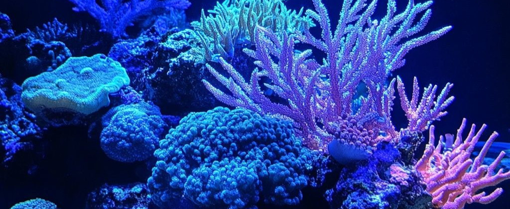
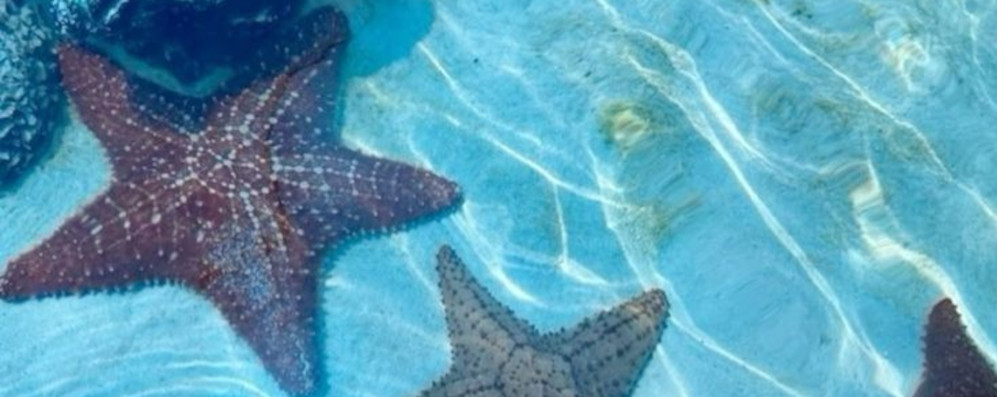

Alguns textos disponiveis para entusiatas da biologia marinha
Corais
Os corais são pequenos animais marinhos que vivem em grupo nos oceanos. Eles formam estruturas chamadas recifes de coral, que servem de abrigo para muitos peixes e outras espécies. Os recifes são muito importantes para o equilíbrio da vida marinha e também ajudam a proteger as costas contra as ondas fortes. Porém, os corais são sensíveis à poluição e ao aumento da temperatura da água. Cuidar dos corais é cuidar do oceano. Cada coral é formado por milhares de pólipos que vivem em colônias. Esses pólipos produzem uma estrutura dura de calcário, que vai se acumulando ao longo dos anos e formando os famosos recifes de coral.

Por que os corais são importantes ?
- Servem de abrigo para peixes e diversas epécies marinhas
- Mantêm o equilibrio da vida maritima
- Protegem as costas contra ondas fortes
- Ajudam na economia
- Movimentam o turismo
- Protegem as cidades costeiras
- Equilibrio da biodiversidade
- Indicadores ambientais
Estrelas do mar

As estrelas-do-mar são animais marinhos que vivem no fundo do oceano. Elas têm formato de estrela e geralmente possuem cinco braços, mas algumas espécies podem ter mais. Alimentam-se de pequenos moluscos e outros organismos marinhos. Um fato curioso é que conseguem regenerar seus braços quando perdem algum. As estrelas-do-mar são importantes para o equilíbrio do ecossistema marinho e ajudam a manter a vida no oceano em harmonia. Esses animais vivem principalmente em regiões costeiras, sobre rochas, areia ou recifes de coral. Elas se alimentam de pequenos moluscos, como mexilhões e ostras, e têm uma forma curiosa de comer: conseguem abrir conchas usando a força de seus braços e depois absorvem o alimento.
Tartarugas
As tartarugas marinhas são animais incríveis que vivem nos oceanos e percorrem grandes distâncias ao longo da vida. Elas nascem na areia das praias e, quando adultas, retornam ao mesmo local para colocar seus ovos. São nadadoras fortes e desempenham um papel importante no equilíbrio da vida marinha. No entanto, enfrentam ameaças como a poluição e a pesca irregular, o que torna sua preservação essencias. Ajudam a controlar populações de águas-vivas e contribuem para a saúde dos recifes e pradarias marinhas. No entanto, estão ameaçadas pela poluição, pelas redes de pesca e pela destruição de seus habitats naturais.